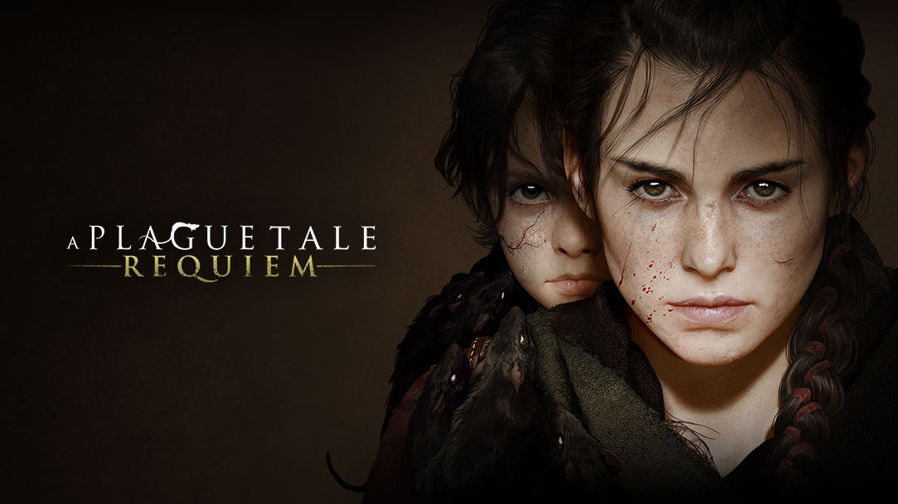

The Last of Us Part II

A The Last of Us Part II egy 2020-as akció-kalandjáték, amelyet a Naughty Dog fejlesztett és a Sony Interactive Entertainment adott ki. A játék posztapokaliptikus környezetekben játszódik, például épületekben és erdőkben, ahol a játékos különféle fegyvereket és lopakodó eszközöket használhat az ellenségek ellen. A történet időszakosan vált Ellie és Abby irányítása között, míg Joelt a nyitószekvenciában irányíthatja a játékos. A platformelemek lehetővé teszik az ugrást, mászást és harci előnyök megszerzését. Az üvegtárgyak betörése révén a játékos hozzáférhet bizonyos területekhez vagy kellékekhez.
Shadow of the Tomb Raider

A Shadow of the Tomb Raider egy 2018-as akció-kalandjáték, amelyet az Eidos-Montréal fejlesztett és a Square Enix adott ki. A játékban a játékos Lara Croft szerepét veszi át, miközben Mexikó és Peru területeit fedezi fel. A játékban található egy nagy központi helyszín, Paititi rejtett városa, ahol egy új barter rendszer teszi lehetővé az erőforrások kereskedelmét és értékesítését.
A Plague Tale: Requiem
Az A Plague Tale: Requiem egy akció-kalandos lopakodó videojáték, amelyet az Asobo Studio fejlesztett és a Focus Entertainment adott ki. A játékos Amicia szerepét veszi át, és ellenséges emberekkel, valamint a fekete pestist terjesztő patkányhordákkal kell szembenéznie. A játékmenet bővült az első részhez képest, új fegyverekkel és alkímiai keverékekkel, mint például a tar, amely növeli a fényforrás sugarát, vagy az Ignifer és Extinguis, amelyekkel a játékos lángot gyújthat vagy elolthat.